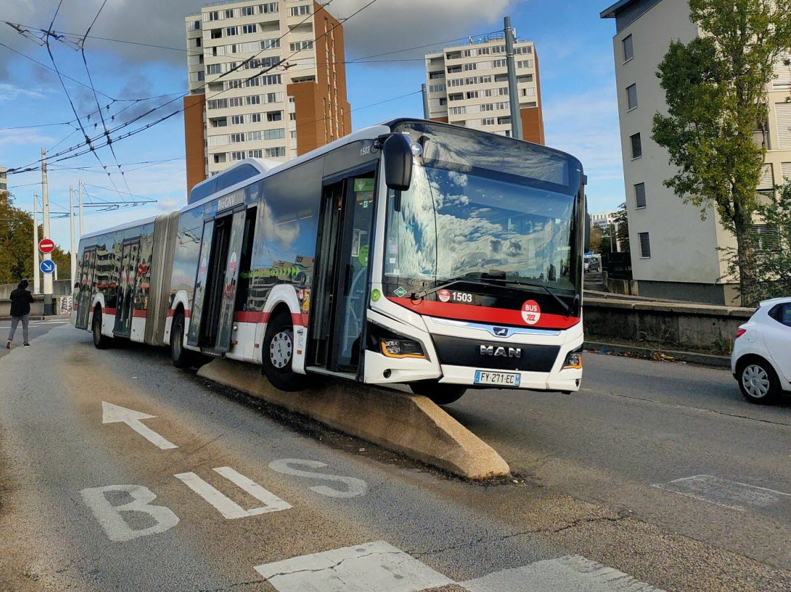

BUS C17 et C26
Les bus de Lyon constituent un réseau de transport en commun efficace et étendu, géré par le réseau TCL (Transports en Commun Lyonnais). Composé de lignes régulières, de bus express et de lignes nocturnes, le réseau couvre l'ensemble de la métropole lyonnaise, offrant ainsi une connectivité optimale. Que vous vous déplaciez en centre-ville, en banlieue ou dans les quartiers périphériques, les bus de Lyon offrent une solution de transport pratique, abordable et respectueuse de l'environnement. Avec des fréquences régulières et une grande couverture du territoire, le réseau de bus TCL constitue un moyen efficace pour explorer la ville et ses environs.
Carte
